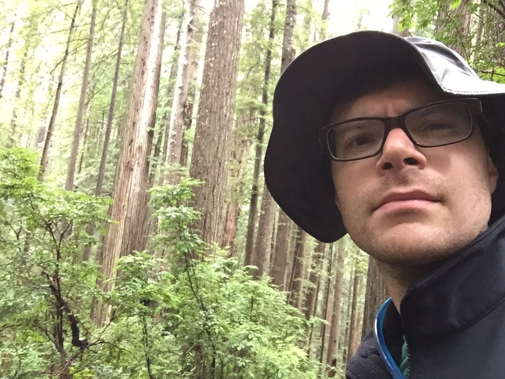

On Personality Tests
Driving along the pacific coast highway, often with no cell service, I had a lot of time by myself, where I could only look out the window, listen to whatever I had downloaded on my phone, and think. While I have mentioned that the Star Wars soundtracks make great musical companions to scenery similar to the movies, such as Big Sur or the Redwood Parks, I spent a lot of time listening to podcasts.
One podcast in particular had an episode about personality tests and the cultural impact they have. Hidden Brain, hosted by Shankar Vedantam, is among my favorite podcasts, and I rarely miss an episode. As a side note, each episode ends by asking the listener, if they enjoyed the episode, to tell a friend about it. Since I rarely tell a friend about each episode in particular, I am hoping the reach of this post can make up for it.
At least as far as I've encountered, people in my world typically associate personality tests with Myers-Briggs Type Indicator. I haven't taken it myself, but it has four binary metrics—extroversion/introversion, sensing/intuition, thinking/feeling, judging/perceiving—which you are assigned based on answering a series of questions. Interestingly, the podcast opened with the four Harry Potter houses, which roughly align with some of the Myers-Briggs types, and covered Chinese zodiacs as well as some unusual and unexpected cultural impacts from personality types.
(As an aside, I don't believe that being given a personality type of any kind can reveal anything new about a person. It is merely a description of that which already exists. It can provide some elucidation on how to better communicate with others and how certain people may react to certain situations in general. But making day-to-day to life-changing decisions based upon a personality type or a zodiac seems like an exercise in nonsense.)

Hidden Brain doesn't paint the Myers-Brigg Type Indicator in the best of light, but it it does take a sober assessment of its promotors and detractors. One person, who had become disillusioned with the test, explained that he took the test and got one result and then a couple months later retook the test and got the exact opposite results on every metric. This story came as no surprise to me, though I was perhaps surprised that it was presenting as surprising.
When these types must choose between two dichotomous metrics, such as thinking/feeling, there's no apparent room for middle ground. Someone who may fall in the middle, or equally encompasses both types, would get assigned to one or the other with the same probability as a coin flip. I'm quite certain that I would be like this person who gets assigned a different personality type each time he takes the test. For example, a Google search for Myers-Brigg personality test-like questions results in the following:
- "You often spend time exploring unrealistic yet intriguing ideas." Uhhh... sometimes... sometimes not.
- "If your friend is sad about something, your first instinct is to support them emotionally, not try to solve their problem." Uhhhhhh... it depends on the situation
- "Your travel plans are more likely to look like a rough list of ideas than a detailed itinerary." Hmm... usually both to be honest
And of course now the last one here related back to travel and the things that I continued to ponder as I slowly drove around the winding coastal forest roads in the dark. I'm pretty content in most situations. I like being around all sorts of people. In fact, many of my friends are so different enough I have struggled to come up with a coherent guest list for a housewarming party, so I never had a housewarming. To many situations on my trip and in life in general, I say "sure, OK".
- "Cabin in the wilderness with no running water or electricity or luxury condo in a high-rise overlooking the city?" Either's fine.
- "Wining and dining with the 1%-ers in Napa or hiking the desert with peanut butter and jelly sandwiches?" Both sound good.
- "Dinner and ice cream connecting with old friends or meeting new people while passing the day away?" Sure.
- "Communal bed and breakfast or privacy and quiet of a hotel?" I prefer a decent balance of both.
- "Solo travel alone in nature or exploring a city in a group or with family" Yes, please.
The only trend I could find in my choices while traveling was a state of pervasive indecisiveness. I created a rough timeline of where I needed to be when and who I would likely see, as well as a few must-do things, and then just played it by ear. Most of the time I would just say "yes" to whatever first suggestion I got that sounded interesting.
That mindset is pretty ubiquitous in much the rest of my life. I'm generally pretty content with whatever, so I almost always go with the flow, so to speak. If there's any lesson to draw from these travel contemplations, it's that I should be more selective in choosing what I do, saying "no" to things more often.
I, like everyone, have limited time to do things, and if I'm just doing whatever is in front of me, then the odds are low that I am spending my time wisely. No, I am not talking about efficiency and productivity here. Remember that productivity can be dangerous. Sometimes an afternoon is best spend doing nothing or wandering aimlessly. Or really any way to spend a day while being fully aware of it.
This behavior could help explain why I have barely left the house (except to see friends and go to yoga) since returning home three days ago. I've spent most of my time reading (Purple Cow by Seth Godin, Learning to Die: Wisdom in the Age of Climate Change by Robert Bringhurst and Jan Zwicky, and Every Time I Find the Meaning of Life, They Change It: Wisdom of the Great Philosophers on How to Live by Daniel Klein), catching up on Game of Thrones and Arrested Development, and writing, all usually with my cat by my side.
It seems that in some ways I lack a type of self-motivation. My internal motivation is stirred by external factors, and left to my own devices, without suggestions, I'll generally opt to do very little. So, I should probably try a little harder to surround myself with an appropriate amount of mental and social stimulation, while at the same time being more selective in who and what I choose to surround myself with.
I write all these musings in a completely neutral way. I don't think anything I have said is good or bad. It's simply an assessment, an analysis from a certain perspective, which I can choose to act on or learn from.
To end, circling back to the idea of personality tests, I will describe one that I actually like: the RHETI Test of the Enneagram Institute. It costs $12 to take and it asks the usual type of vague questions. However, it does not assign you to a dichotomous type. Rather, it starts with nine types, with names reminiscent of dishes at Life Alive, and it assigns you ratings of 0 to 30 (I think that's the range) of how much you align to each. Within these nine types in a circle, rather than a spectrum, subtlety and ambivalence can emerge. Also, why I like it: unlike zodiacs (which you can read any as relevant to you regardless of your sign), reading the types with low alignments markedly describe personality traits with which you don't at all identify. It also talks about how each type can grow, as well as what behaviors might emerge when under stress. Useful for the workplace, by reading about the other types, you can learn how to best communicate ideas to brains that think differently from you.
OK. Stay tuned for posts about budgeting for a long road trip and why you should never read David Brooks unless a friend emails you a link.